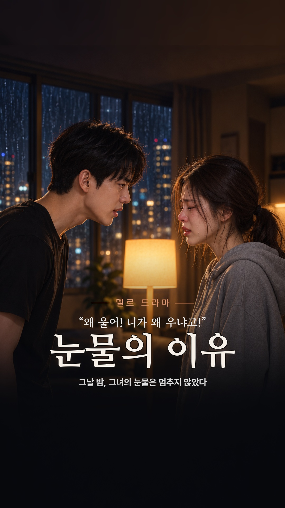
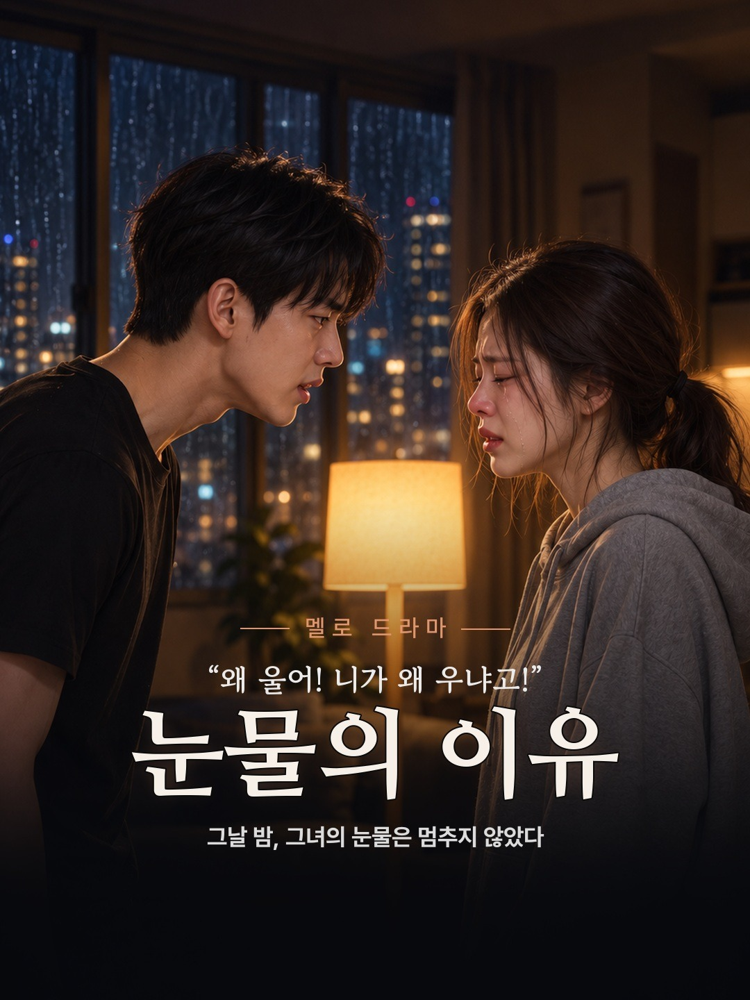
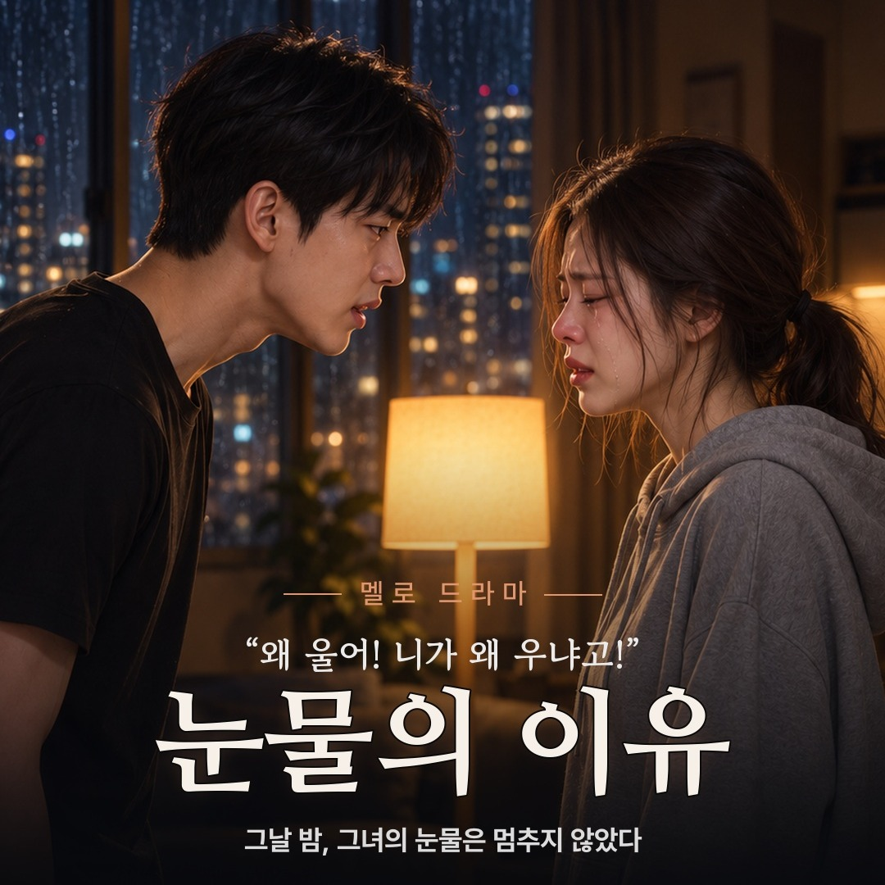

[19번] 눈물의 이유 — 최종 검수
매운 젤리 회차 · 완성본 v3 (44.1초) · 2026-10-22 · 대표님 최종 승인 대기
이번 판에서 고친 것
- v1: 앞을 자른 컷의 끝 대사가 사라짐(무음·입만 움직임) → 조립기 v2에서 수정
- v2: 컷마다 소리가 20~40ms씩 늦어져 후반 립싱크 어긋남 → 조립기 v3에서 수정
- v3: 9개 대사 컷 모두 원본 대비 소리 어긋남 0.1ms 이하, 대사 전부 확인
영상
번호 검수본 — 왼쪽 위 컷 번호, 오른쪽 위 시간. 고칠 곳은 «C07 몇 초»처럼 말씀해 주세요.
업로드될 완성본 그대로 (번호 없음)
썸네일 — B안 (대표님 선택)

원본 9:16

중앙 3:4

중앙 1:1 — 글자 전부 안전 영역 안(세로 58.8~76.3%)
업로드 초안
제목
[19번] 왜 울어! 니가 왜 우냐고! | 눈물의 이유 #shorts설명
눈물의 이유 새벽, 남사친 원룸에서 지아는 울음을 멈추지 못한다. 답답한 민재는 끝내 소리치는데… 그녀가 우는 진짜 이유는 따로 있었다. 극 중 제품: 롯데 짱매워요 떡볶이맛 젤리 × 엽떡 오리지널맛 52g (12개) 🛒 [19번] 구매 링크: 프로필 링크에서 번호 [ 19 ]를 검색해 주세요. ※ 가상의 인물과 상황을 AI로 제작한 드라마입니다. 이 포스팅은 쿠팡 파트너스 활동의 일환으로, 이에 따른 일정액의 수수료를 제공받습니다. #그거어디서삼 #숏드라마 #반전드라마 #멜로 #매운젤리 #엽떡 #shorts태그
짱매워요, 떡볶이맛젤리, 엽떡, 엽떡젤리, 매운젤리, 롯데, 숏드라마, 반전드라마, PPL, 그거어디서삼, whereispick, shorts
«최저가»·순위·한정·효능 표현 없음 · 제목·설명에 반전(젤리) 직접 노출 없음 · 가격·재고는 공개 직전 재확인
컷별 소리 대조
| 컷 | 시작 | 어긋남 | 받아쓰기(완성본) |
|---|---|---|---|
| C01 | 0.00 | +0.0ms | 왜 울어? 니가 왜 우냐고! |
| C02 | 3.42 | +0.0ms | 몰라 그냥 눈물이 난다고! |
| C03 | 7.96 | +0.1ms | 자신 있다며? 그 당당하던 지아 어디 갔어? |
| C04 | 12.50 | +0.0ms | 나도 그만 울고 싶어. 근데 안 멈춰! |
| C05 | 16.96 | +0.1ms | 억울하면 일어나! 질질 짜지 말고! |
| C06 | 21.29 | +0.0ms | 아니 몇 개만 더 먹어볼게 |
| C07 | 25.71 | +0.1ms | 매운데도 그렇게 맛있냐? |
| C08 | 29.75 | +0.0ms | (응…) 근데 맛있어 |
| C09 | 34.17 | +0.0ms | 왜 울어! 니가 왜 우냐고! |
| C10 | 38.58 | — | 엔드카드 안내 음성(화면 밖): 롯데 짱매워요 떡볶이맛 젤리, 엽떡 오리지널맛. 구매 링크는 프로필에. |
기술 검사 통과: 정지 화면 0건 · 음량 -16.6 LUFS · 화면·소리 모두 0초 시작 · 배경음악은 C06 반전에서 전환, 엔드카드에서 끊김
알고 계실 점
- C09 민재 눈물은 투샷이라 얼굴이 작아 폰에서 약하게 보일 수 있습니다.
- C08 우유팩 모양이 C07과 조금 다릅니다(소품 연속성 경미).
- 사람 귀로 들은 청취 검수는 대표님 몫입니다(기계 받아쓰기·대조로 확인).